대기환경산업기사 (2017-03-05 기출문제)
1과목: 대기오염개론
1. 지상 10m에서의 풍속이 5m/sec라면 지상 50m에서의 풍속(m/sec)은? (단, Deacon식 적용, 대기는 심한 역전상태(p=0.4)임)
- 8.5
- 9.5
- 10.5
- 11.5
(정답률: 81%)
2. 최근 문제시되고 있는 석면에 관한 설명으로 옳지 않은 것은?
- 석면은 자연계에서 산출되는 길고, 가늘고, 강한 섬유상 물질이다.
- 석면에 폭로되어 중피종이 발생되기까지의 기간은 일반적으로 폐암보다는 긴 편이나 20년 이하에서 발생하는 예도 있다.
- 석면은 절연성의 성질을 가지고, 화학적 불활성이 요구되는 곳에 사용될 수 있다.
- 석면의 유해성은 백석면이 청석면보다 강하다.
(정답률: 87%)

3. 다음 중 2차 대기오염물질과 가장 거리가 먼 것은?
- NaCl
- H2O2
- PAN
- SO3
(정답률: 87%)
4. 다음 역전현상에 대한 설명 중 옳지 않은 것은?
- 대류권 내에서 온도는 높이에 따라 감소하는 것이 보통이나 경우에 따라 역으로 높이에 따라 온도가 높아지는 층을 역전층이라고 한다.
- 침강역전은 저기압의 중심부분에서 기층이 서서히 침강하면서 발생하는 현상으로 좁은 범위에 걸쳐서 단기간 지속된다.
- 복사역전은 일출 직전에 하늘이 맑고 바람이 적을 때 가장 강하게 형성된다.
- LA스모그는 침강역전, 런던스모그는 복사역전과 관계가 있다.
(정답률: 72%)
5. 다음 국제협약 중 질소산화물 배출량 또는 국가간 이동량의 최저 30% 삭감에 관한 국가간 장거리 이동 대기오염조약의 의정서(협약)에 해당하는 것은?
- 몬트리올 의정서
- 런던 협약
- 오슬로 협약
- 소피아의정서
(정답률: 74%)
6. 염화수소의 주요 배출 관련 업종과 가장 거리가 먼 것은?
- 냉동공장
- 금속제련
- 쓰레기소각장
- 플라스틱 공장
(정답률: 78%)
7. 지상으로부터 500m까지의 평균 기온감률은 －1.3℃/100m이다. 100m 고도의 기온이 20℃라 하면 고도 300m에서의 기온은?
- 14.7℃
- 15.8℃
- 16.2℃
- 17.4℃
(정답률: 54%)
8. 다음 설명과 관련된 복사법칙으로 가장 적합한 것은?
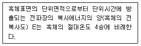
- 플랑크의 법칙
- 빈의 법칙
- 스테판-볼츠만의 법칙
- 알베도의 법칙
(정답률: 88%)
9. 다음 ( ) 안에 알맞은 것은?
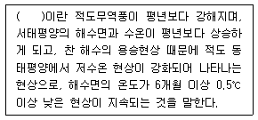
- 엘니뇨 현상
- 사헬 현상
- 라니냐 현상
- 헤들리셀 현상
(정답률: 83%)
10. 가시도(visibility)에 관한 설명으로 옳지 않은 것은?
- 빛의 흡수와 분산으로 가시도가 감소한다.
- 가시거리는 습도에 의하여 크게 영향을 받는다.
- Coh(coefficient of haze)는 깨끗한 여과지에 먼지를 모아 빛전달율의 감소를 측정함으로써 결정된다.
- 강도가 I인 빛으로 L거리에서 조명하여 dL거리를 통과하는 동안 흡수와 분산으로 빛의 강도가 △I만큼 감소할 때 △I=σ(I)2/(dL)이다. (σ：소광계수)
(정답률: 80%)
11. 특정물질의 종류와 그 화학식의 연결로 옳지 않은 것은?
- CFC-214 : C3F4Cl4
- Halon-2402 : C2F4Br2
- HCFC-133 : CH3F3Cl
- HCFC-222 : C3HF2Cl5
(정답률: 64%)
12. 도시대기에서 하루 중 최고농도가 가장 빠른 시간에 나타나는 물질은?
- NO
- NO2
- O3
- HNO3
(정답률: 78%)
13. 바람장미(wind rose)에 기록되는 내용과 가장 거리가 먼 것은?
- 풍향
- 풍속
- 풍압
- 무풍률
(정답률: 74%)
14. 연소과정에서 방출되는 NOx 배출가스 중 NO：NO2의 계략적인 비는 얼마정도 인가?
- 5：95
- 20：80
- 50：50
- 90：10
(정답률: 90%)
15. 다음 중 인체의 폐포 침착률이 가장 큰 입경 범위는?
- 0.001~0.01㎛
- 0.01~0.1㎛
- 0.1~1.0㎛
- 10~50㎛
(정답률: 70%)
16. 굴뚝 유효고도가 75m에서 100m로 높아졌다면 굴뚝의 풍하 측 중심축상 지상최대 오염농도는 75m일 때의 것과 비교하면 몇 %가 되겠는가? (단, Sutton의 확산 관련 식을 이용)
- 약 25%
- 약 56%
- 약 75%
- 약 88%
(정답률: 62%)
17. 다음 특정물질 중 오존 파괴지수가 가장 큰 것은?
- CHFCl2
- CF2BrCl
- CHFClCF3
- CHF2Br
(정답률: 68%)
18. 대기오염물질과 지표식물의 연결로 거리가 먼 것은?
- SO2 - 알팔파
- HF - 글라디올러스
- O3 - 담배
- CO - 강낭콩
(정답률: 71%)
19. 인위적인 원인에 의한 시정장애와 관련된 현상과 물질에 대한 설명으로 옳지 않은 것은?
- 시정장애현상의 직접적인 원인은 주로 미세먼지 때문이다.
- 시정장애는 특히 0.01~0.1㎛ 크기의 미세먼지들에 의한 빛의 산란 및 흡수현상이다.
- 대부분 대기 중에서 1차 오염물질들이 서로 반응, 응축, 응집하여 생성, 성장하기 때문에 2차 오염물질이라고 불린다.
- 이들 2차 오염물질의 입경분포, 화학성분, 수분함량 등의 여러 인자들이 시정장애 현상에 영향을 미친다.
(정답률: 73%)
20. 공기역학직경(aerodynamic diameter)의 정의로 옳은 것은?
- 원래의 먼지와 침강속도가 동일하며, 밀도가 1g/cm3인 구형입자의 직경
- 원래의 먼지와 밀도 및 침강속도가 동일한 구형입자의 직경
- 먼지의 한쪽 끝 가장자리와 다른 쪽 끝 가장자리 사이의 거리
- 먼지의 면적과 동일한 면적을 갖는 원의 직경
(정답률: 86%)
2과목: 대기오염 공정시험 기준(방법)
21. 이론단수가 1,600인 분리관이 있다. 보유시간이 10분인 피크의 좌우 변곡점에서 접선이 자르는 바탕선의 길이는? (단, 기록지 이동속도는 5mm/min, 이론단수는 모든 성분에 대하여 같다.)
- 1mm
- 2mm
- 5mm
- 10mm
(정답률: 56%)
22. 대기오염공정시험기준상 환경대기 중의 먼지 측정에 적용 가능한 시험방법으로 거리가 먼 것은?
- 고용량 공기시료채취기법
- 저용량 공기시료채취기법
- 오존전구물질-자동측정법
- 베타선법
(정답률: 68%)
23. 반자동식 측정법으로 굴뚝 배출가스 중 먼지 측정 시 굴뚝의 지름이 2.5m인 원형굴뚝의 측정점수는?
- 4
- 8
- 12
- 16
(정답률: 84%)
24. A굴뚝 내 배출가스의 유속을 피토관으로 측정한 결과 동압이 25mmH2O였고, 온도가 211℃이었다면 이때 굴뚝 내 배출가스의 유속은? (단, 표준상태에서 배출가스의 밀도：1.3kg/Sm3, 피토관 계수：0.98, 기타 조건은 같다고 가정)
- 18.6m/sec
- 20.4m/sec
- 22.8m/sec
- 25.3m/sec
(정답률: 53%)
25. 다음 중 냉증기-원자흡수분광광도법을 사용하여 분석하는 오염물질은?
- 카드뮴화합물
- 불소화합물
- 수은화합물
- 페놀화합물
(정답률: 71%)
26. 대기오염공정시험기준상 따로 규정이 없을 경우 사용하는 시약의 규격으로 틀린 것은?
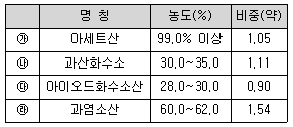
- ㉮
- ㉯
- ㉰
- ㉱
(정답률: 73%)
27. 다음은 피리딘 피라졸론법으로 시안화수소를 분석할 때, 시안화수소 표정방법에 관한 사항이다. ( ) 안에 알맞은 것은?
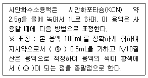
- ㉮ p-다이메틸아미노벤질리덴로다닌의 아세톤 용액, ㉯ 청색
- ㉮ p-다이메틸아미노벤질리덴로다닌의 아세톤 용액, ㉯ 적색
- ㉮ 0.1N 수산화소듐 용액, ㉯ 청색
- ㉮ 0.1N 수산화소듐 용액, ㉯ 적색
(정답률: 75%)
28. 기체 크로마토그래피에서 1,2 시료의 분석치가 다음과 같을 때 분리계수는?
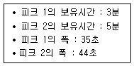
- 1.7
- 2.5
- 3.0
- 4.4
(정답률: 60%)
29. 다음 중 오르자트 가스 분석계에 사용되는 산소흡수액으로 가장 적합한 것은?
- 메틸레드 용액
- 포화 식염수
- 수산화포타슘과 피로갈롤 혼합용액
- 수산화포타슘 용액
(정답률: 60%)
30. 아래의 시료가스 채취장치에서 B와 C의 명칭으로 가장 적합한 것은?
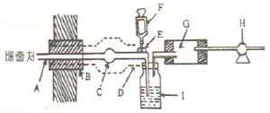
- B：보온재, C：건조재
- B：보온재, C：여과지
- B：여과지, C：보온재
- B：여과지, C：건조재
(정답률: 77%)
31. 굴뚝 배출가스 내의 산소측정방법 중 덤벨형(Dumb-Bell) 자기력 분석계의 구성장치에 관한 설명으로 옳지 않은 것은?
- 측정셀은 시료 유동실로서 자극 사이에 배치하여 덤벨 및 불균형 자계발생 자극편을 내장한 것이다.
- 덤벨은 자기화율이 큰 석영 등으로 만들어진 중공의 구체를 막대 양 끝에 부착한 것으로 알곤을 봉입한 것이다.
- 자극편은 외부로부터 영구자석에 의하여 자기화되어 불균등 자장을 발생하는 것이다.
- 피드백코일은 편위량을 없애기 위하여 전류에 의하여 자기를 발생시키는 것으로 일반적으로 백금선이 이용된다.
(정답률: 75%)
32. 배출가스 중의 SO2량이 2,286mg/Sm3일 때, ppm으로 환산한 값은? (단, 표준상태 기준)
- 약 300
- 약 800
- 약 1,200
- 약 6,530
(정답률: 63%)
33. 굴뚝 배출가스 내의 브롬화합물 분석방법 중 자외선/가시선 분광법에서 사용되는 흡수액으로 옳은 것은?
- 수산화소듐(0.4W/V%) 용액
- 과망간산포타슘(0.4W/V%) 용액
- 염산(1＋1) 용액
- 과산화수소수(3%) 용액
(정답률: 56%)
34. 다음은 배출가스 중 벤젠 분석방법이다. ( ) 안에 알맞은 것은?
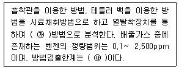
- ㉮ 원자흡수분광광도, ㉯ 0.03ppm
- ㉮ 원자흡수분광광도, ㉯ 0.1ppm
- ㉮ 기체 크로마토그래피, ㉯ 0.03pm
- ㉮ 기체 크로마토그래피, ㉯ 0.1ppm
(정답률: 77%)
35. 기체－액체 크로마토그래피에서 고정상 액체의 구비조건으로 옳은 것은?
- 사용온도에서 증기압이 낮고, 점성이 작은 것이어야 한다.
- 사용온도에서 증기압이 낮고, 점성이 큰 것이어야 한다.
- 사용온도에서 증기압이 높고, 점성이 작은 것이어야 한다.
- 사용온도에서 증기압이 높고, 점성이 큰 것이어야 한다.
(정답률: 72%)
36. 휘발성 유기화합물(VOCs) 누출확인방법에 사용되는 측정기기의 규격, 성능기준 요구사항으로 거리가 먼 것은?
- 기기의 응답시간은 30초보다 작거나 같아야 한다.
- 교정밀도는 교정용 가스 값의 10%보다 작거나 같아야 한다.
- 기기의 계기눈금은 최소한 표시된 누출농도의 ±10%를 읽을 수 있어야 한다.
- 기기는 펌프를 내장하고 있어야 하고 일반적으로 시료유량은 0.5~3L/min이다.
(정답률: 59%)
37. 물질의 파쇄, 선별, 퇴적, 이적, 기타 기계적 처리 또는 연소, 합성분해 시 굴뚝에서 배출되는 먼지를 측정하는 방법에 관한 설명으로 옳지 않은 것은?
- 반자동식 채취기에 의한 방법으로써 먼지가 포집된 여과지를 110±5℃에서 충분히(1~3시간) 건조시켜 부착수분을 제거한 후 먼지의 질량농도를 계산한다.
- 반자동식 채취기에 의한 방법으로써 배연탈황시설과 황산미스트에 의해서 먼지농도가 영향을 받은 경우에는 여과지를 135℃ 이상에서 3시간 이상 건조시킨 후 먼지농도를 계산한다.
- 측정공은 측정위치로 선정된 굴뚝 벽면에 내경 100~150mm 정도로 설치하고 측정 시 이외에는 마개를 막아 밀폐하고 측정 시에도 흡입관 삽입 이외의 공간은 공기가 새지 않도록 밀폐되어야 한다.
- 굴뚝 단면적이 0.25m2 이하로 소규모 원형 굴뚝인 경우에는 그 굴뚝 단면의 중심을 대표점으로 하여 1점만 측정한다.
(정답률: 73%)
38. 배출가스 중 불꽃이온화기를 이용한 총탄화수소 분석에 사용되는 용어 및 설명으로 옳지 않은 것은?
- 배출가스 중 이산화탄소(CO2), 수분이 존재한다면 양의 오차를 가져올 수 있다. 단, 이산화탄소(CO2), 수분의 퍼센트(%)농도의 곱이 100을 초과하지 않는다면 간섭은 없는 것으로 간주한다.
- 총탄화수소 분석부는 총탄화수소 농도를 감지하고, 농도에 비례하는 출력을 발생하는 부분을 말한다.
- 반응시간은 오염물질 농도의 단계변화에 따라 최종값의 100%에 도달하는 시간으로 한다.
- 수분트랩 안에 유기성 입자상 물질이 존재한다면 양의 오차를 가져올 수 있다.
(정답률: 71%)
39. 굴뚝 배출가스 중 폼알데하이드 및 알데하이드류의 분석방법으로 거리가 먼 것은?
- Methyl Ethyl Ketone법
- 고성능 액체 크로마토그래피법
- 크로모트로핀산 자외선/가시선 분광법
- 아세틸아세톤 자외선/가시선 분광법
(정답률: 68%)
40. 다음 중 오염물질과 그 측정방법의 연결로 옳지 않은 것은?
- 불소 : 이온선택전극법
- 질소산화물 : 페놀디술폰산법
- 브롬화합물 : 질산토륨－네오트린법
- 벤젠 : 기체 크로마토그래피법
(정답률: 59%)
3과목: 대기오염방지기술
41. 아래 그림은 다음 중 어떤 집진장치에 해당하는가?
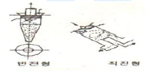
- 중력집진장치
- 관성력집진장치
- 원심력집진장치
- 전기집진장치
(정답률: 79%)
42. 연료의 성질에 관한 설명 중 옳지 않은 것은?
- 휘발분의 조성은 고탄화도의 역청탄에서는 탄화수소가스 및 타르 성분이 많아 발열량이 높다.
- 석탄의 탄화도가 낮으면 탄화수소가 감소하며 수분과 이산화탄소가 증가하여 발열량은 낮아진다.
- 고정탄소는 수분과 이산화탄소의 합을 100에서 제외한 값이다.
- 고정탄소와 휘발분의 비를 연료비라 한다.
(정답률: 66%)
43. 중량조성이 탄소 85%, 수소 15%인 액체연료를 매시 100kg 연소한 후 배출가스를 분석하였더니 분석치가 CO2 12.5%, CO 3%, O2 3.5%, N2 81%이었다. 이때 매시간당 필요한 공기량(Sm3/hr)은?
- 약 13
- 약 157
- 약 657
- 약 1,271
(정답률: 50%)
44. 총집진효율 90%를 요구하는 A공장에서 50% 효율을 가진 1차 집진장치를 이미 설치하였다. 이때 2차 집진장치는 몇 % 효율을 가진 것이어야 하는가? (단, 장치 연결은 직렬조합이다.)
- 70
- 75
- 80
- 85
(정답률: 69%)
45. 환기장치에서 후드(Hood)의 일반적인 흡인요령으로 거리가 먼 것은?
- 후드를 발생원에 근접시킨다.
- 국부적인 흡인방식을 택한다.
- 충분한 포착속도를 유지한다.
- 후드의 개구면적을 크게 한다.
(정답률: 78%)
46. 공기비가 작을 경우 연소실 내에서 발생될 수 있는 상황을 가장 잘 설명한 것은?
- 가스의 폭발위험과 매연발생이 크다.
- 배기가스 중 NO2 양이 증가한
- 부식이 촉진된다.
- 연소온도가 낮아진다.
(정답률: 65%)
47. 다음 연료 중 황(S)성분의 함량 순서로 가장 적합한 것은?
- 중유＞경유＞등유＞휘발유＞LPG
- 중유＞등유＞경유＞휘발유＞LPG
- 중유＞석탄＞등유＞경유＞휘발유
- 석탄＞중유＞등유＞경유＞휘발유
(정답률: 77%)
48. 다음 악취물질 중 “자극적이며, 새콤하고 타는 듯한 냄새”와 가장 가까운 것은?
- CH3SH
- (CH3)2CH2CHO
- CH3S2CH3
- (CH3)2S
(정답률: 80%)
49. 다음 중 액화석유가스(LPG)에 관한 설명으로 옳지 않은 것은?
- 천연가스에서 회수되기도 하지만 대부분은 석유정제 시 부산물로 얻어진다.
- 보통 LNG보다 발열량이 낮으며, 착화온도는 200~250℃이다.
- 비중이 공기보다 무거워 누출될 경우, 인화·폭발성의 위험이 있다.
- 액체에서 기체로 될 때, 증발열이 있으므로 사용하는 데 유의할 필요가 있다.
(정답률: 73%)
50. 연소배기가스가 4,000Sm3/hr인 굴뚝에서 정압을 측정하였더니 20mmH2O였다. 여유율 20%인 송풍기를 사용할 경우 필요한 소요동력(kW)은? (단, 송풍기 정압효율은 80%, 전동기 효율은 70%이다.)
- 0.38
- 0.47
- 0.58
- 0.66
(정답률: 55%)
51. 다음 중 휘발성유기화합물(VOCs) 제어기술로 가장 거리가 먼 것은?
- 활성탄 흡착법
- 응축법
- 수은환원법
- 흡수법
(정답률: 65%)
52. 흡수법에 관한 다음 설명 중 옳지 않은 것은?
- 흡수제는 휘발성이 커야 한다.
- 충전탑은 액분산형 흡수장치에 해당한다.
- 재생가치가 있는 물질이나 흡수제의 재사용은 탈착이나 stripping을 통해 회수 또는 재생한다.
- 흡수제의 빙점은 낮고, 비점은 높아야 한다.
(정답률: 75%)
53. 중력침강실 내의 함진가스의 유속이 2m/sec인 경우, 바닥면으로부터 1m 높이(H)로 유입된 먼지는 수평으로 몇 m 떨어진 지점에 착지하겠는가? (단, 층류기준, 먼지의 침강속도는 0.4m/sec)
- 2.5
- 3.5
- 4.5
- 5.0
(정답률: 53%)
54. 원추하부반경이 30cm인 사이클론에서 배출가스의 접선속도가 600m/min일 때 분리계수는?
- 3.0
- 3.4
- 30
- 34
(정답률: 44%)
55. 유체가 흐르는 관의 직경을 2배로 하면 나중속도는 처음속도 대비 어떻게 변화되는가? (단, 유량변화 등 다른 조건은 변화 없다고 가정한다.)
- 처음의 1/8로 된다.
- 처음의 1/4로 된다.
- 처음의 1/2로 된다
- 처음과 같다
(정답률: 74%)
56. 송풍관에 송풍량 40m3/min을 통과시켰을 때 20mmH2O의 압력손실이 생겼다. 송풍량이 60m3/min로 증가된다면 압력손실(mmH2O)은?
- 20
- 30
- 35
- 45
(정답률: 36%)
57. 다음 중 다이옥신의 광분해에 가장 효과적인 파장범위는?
- 150~220nm
- 250~340nm
- 360~540nm
- 600~850nm
(정답률: 58%)
58. 다음 중 SOx와 NOx를 동시에 제어하는 기술로 거리가 먼 것은?
- Filter cage 공정
- 활성탄 공정
- NOxSO 공정
- CuO 공정
(정답률: 70%)
59. 세정집진장치에서 입자와 액적 간의 충돌횟수가 많을수록 집진효율은 증가되는데 관성충돌계수(효과)를 크게 하기 위한 조건으로 옳지 않은 것은?
- 분진의 입경이 커야 한다.
- 분진의 밀도가 커야 한다.
- 액적의 직경이 커야 한다.
- 처리가스의 점도가 낮아야 한다.
(정답률: 67%)
60. 50m3/min의 공기를 직경 28cm인 원형관을 사용하여 수송하고자 할 때 관내의 속도압(mmH2O)을 구하면? (단, 공기의 비중은 1.2)
- 8.5
- 9.6
- 11.2
- 15.6
(정답률: 49%)
4과목: 대기환경 관계 법규
61. 대기환경보전법규상 한국환경공단이 환경부장관에게 보고해야 할 위탁업무 보고사항 중 자동차배출가스 인증생략 현황의 보고횟수 기준은?
- 수시
- 연 1회
- 연 2회
- 연 4회
(정답률: 60%)
62. 다음은 악취방지법규상 2006년 1월 1일부터 적용되는 폐기물 보관·처리시설의 악취배출시설규모 기준이다. ( ) 안에 가장 적합한 것은?
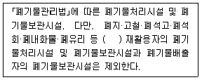
- 무기성폐기물(수분을 제외한 무기물 함량이 15% 이상이어야 한다.)
- 무기성폐기물(수분을 제외한 무기물 함량이 30% 이상이어야 한다.)
- 무기성폐기물(수분을 제외한 무기물 함량이 45% 이상이어야 한다.)
- 무기성폐기물(수분을 제외한 무기물 함량이 60% 이상이어야 한다.)
(정답률: 68%)
63. 대기환경보전법령상 과태료의 부과기준으로 옳지 않은 것은?
- 일반기준으로서 위반행위의 횟수에 따른 부과기준은 최근 1년간 같은 위반행위로 과태료 부과처분을 받은 경우에 적용한다.
- 일반기준으로서 부과권자는 위반행위의 동기와 그 결과 등을 고려하여 과태료 부과금액의 80퍼센트 범위에서 이를 감경한다.
- 개별기준으로서 제작차 배출허용기준에 맞지 않아 결함시정명령을 받은 자동차제작자가 결함시정 결과보고를 아니한 경우 1차 위반 시 과태료 부과금액은 100만원이다.
- 개별기준으로서 제작차 배출허용기준에 맞지 않아 결함시정명령을 받은 자동차제작자가 결함시정 결과보고를 아니한 경우 3차 위반 시 과태료 부과금액은 200만원이다.
(정답률: 64%)
64. 대기환경보전법령상 오염물질발생량에 따른 사업장 분류기준 중 4종 사업장 분류기준은?
- 대기오염물질발생량의 합계가 연간 10톤 이상 20톤 미만인 사업장
- 대기오염물질발생량의 합계가 연간 5톤 이상 20톤 미만인 사업장
- 대기오염물질발생량의 합계가 연간 5톤 이상 10톤 미만인 사업장
- 대기오염물질발생량의 합계가 연간 2톤 이상 10톤 미만인 사업장
(정답률: 79%)
65. 대기환경보전법규상 자동차 운행정지를 받은 자동차를 운행정지기간 중에 운행하는 경우 물게 되는 벌금기준은?
- 100만원 이하의 벌금
- 200만원 이하의 벌금
- 300만원 이하의 벌금
- 500만원 이하의 벌금
(정답률: 63%)
66. 다음은 대기환경보전법규상 고체연료 사용시설 설치기준이다. ( ) 안에 가장 적합한 것은?
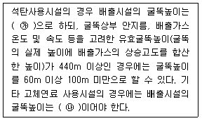
- ㉮ 50m 이상, ㉯ 20m 이상
- ㉮ 50m 이상, ㉯ 10m 이상
- ㉮ 100m 이상, ㉯ 20m 이상
- ㉮ 100m 이상, ㉯ 100m 이상
(정답률: 71%)
67. 대기환경보전법규상 환경정책기본법에 의한 환경보전협회에서 받는 환경기술인의 교육기간 기준으로 옳은 것은? (단, 신규교육 기준, 정보통신매체 원격교육이 아님)
- 2일 이내
- 3일 이내
- 4일 이내
- 10일 이내
(정답률: 67%)
68. 대기환경보전법규상 대기오염물질의 배출허용기준과 관련하여 굴뚝 원격감시체계 관제센터로 측정결과를 자동 전송하는 배출시설에 대한 특례기준이다. ( ) 안에 알맞은 것은?
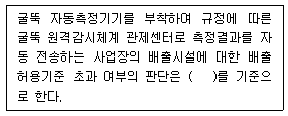
- 매 5분 평균치
- 매 10분 평균치
- 매 30분 평균치
- 매 1시간 평균치
(정답률: 69%)
69. 대기환경보전법령상 대통령령으로 정하는 제작차 배출허용기준이 설정된 오염물질의 종류에 해당되지 않는 것은? (단, 휘발유자동차)
- 일산화탄소
- 탄화수소
- 질소산화물
- 입자상물질
(정답률: 68%)
70. 다음은 악취방지법상 용어의 뜻이다. ( ) 안에 가장 적합한 것은?
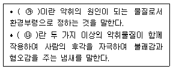
- ㉮ 유해악취물질, ㉯ 다중악취
- ㉮ 유해악취물질, ㉯ 복합악취
- ㉮ 지정악취물질, ㉯ 다중악취
- ㉮ 지정악취물질, ㉯ 복합악취
(정답률: 78%)
71. 대기환경보전법령상 일일초과배출량 및 일일유량의 산정방법기준으로 옳지 않은 것은?
- 일반오염물질의 배출허용기준 초과 일일오염물질배출량은 소수점 이하 첫째 자리까지 계산한다.
- 먼지 배출농도의 단위는 세제곱미터당 밀리그램으로 한다.
- 일일유량 산정 시 적용되는 측정유량의 단위는 일일당 세제곱미터로 한다.
- 일일유량 산정 시 적용되는 일일조업시간은 배출량을 측정하기 전 최근 조업한 30일 동안의 배출시설 조업시간 평균치를 시간으로 표시한다.
(정답률: 55%)
72. 대기환경보전법령상 청정연료를 사용하여야 하는 대상시설의 범위로 옳지 않은 것은?
- 산업용 열병합 발전시설
- 건축법 시행령에 따른 공동주택으로서 동일한 보일러를 이용하여 하나의 단지 또는 여러 개의 단지가 공동으로 열을 이요하는 중앙집중난방방식으로 열을 공급받고, 단지 내 모든 세대의 평균 전용면적이 40.0m2를 초과하는 공동주택
- 전체 보일러의 시간당 총 증발량이 0.2톤 이상인 업무용 보일러(영업용 및 공공용 보일러를 포함하되, 산업용 보일러는 제외한다)
- 집단에너지사업법 시행령에 따른 지역냉난방사업을 위한 시설(단, 지역냉난방사업을 위한 시설 중 발전폐열을 지역냉난방으로 공급하는 산업용 열병합발전시설로서 환경부장관이 승인한 시설은 제외)
(정답률: 72%)
73. 대기환경보전법규상 운행차 배출허용기준 적용으로 옳지 않은 것은?
- 건설기계 중 덤프트럭, 콘크리트 믹서트럭, 콘크리트 덤프트럭에 대한 배출허용기준은 화물자동차기준을 적용한다.
- 희박연소(Lean Burn)방식을 적용하는 자동차는 공기과잉률 기준을 적용하지 아니한다.
- 휘발유와 가스를 같이 사용하는 자동차의 배출가스 측정 및 배출허용기준은 휘발유의 기준을 적용한다.
- 알코올만 사용하는 자동차는 탄화수소 기준을 적용하지 아니한다.
(정답률: 67%)
74. 대기환경보전법규상 배출시설과 방지시설의 정상적인 운영·관리를 위해 환경기술인 업무사항을 준수사항 및 관리사항으로 구분할 때, 다음 중 준수사항과 거리가 먼 것은?
- 자가측정은 정확히 할 것
- 배출시설 및 방지시설의 운영기록을 사실에 기초하여 작성할 것
- 배출시설 및 방지시설의 관리 및 개선에 관한 계획을 수립할 것
- 자가측정 시에 사용한 여과지는 환경분야 시험·검사 등에 관한 법률에 따른 환경오염 공정시험기준에 따라 기록한 시료채취기록지와 함께 날짜별로 보관·관리할 것
(정답률: 72%)
75. 환경정책기본법령상 각 오염물질의 대기환경기준 및 측정방법의 연결로 옳지 않은 것은?
- SO2의 1시간 평균치 0.15ppm 이하 - 자외선형광법(Pulse U.V. Fluorescence Method)
- NO2의 연간 평균치 0.03ppm 이하 - 화학발광법(Chemiluminescent Method)
- O3의 8시간 평균치 0.1ppm 이하 - 자외선광도법(U.V. Photometric Method)
- PM-10의 24시간 평균치 100㎍/m3 이하－베타선흡수법(β-Ray Absorption Method)
(정답률: 62%)
76. 실내공기질관리법상 이 법의 적용대상이 되는 다중이용시설(대통령령으로 정하는 규모의 것)에 해당하지 않는 것은 어느 것인가?
- 지하역사(출입통로·대합실·승강장 및 환승통로와 이에 딸린 시설을 포함)
- 실외공공주차장
- ｢도서관법｣에 따른 도서관
- ｢게임산업진흥에 관한 법률｣에 따른 인터넷컴퓨터게임시설제공업의 영업시설
(정답률: 78%)
77. 대기환경보전법규상 대기오염방지시설과 가장 거리가 먼 것은? (단, 환경부장관이 인정하는 시설 등은 제외)
- 촉매반응을 이용하는 시설
- 음파집진시설
- 미생물을 이용한 처리시설
- 환기반응을 이용하는 시설
(정답률: 58%)
78. 대기환경보전법규상 공동방지시설 운영기구 대표자가 공동방지시설을 설치하고자 할 때 제출하여야 하는 공동방지시설의 위치도로 옳은 것은?
- 축척 5천분의 1의 지형도
- 축척 1만분의 1의 지형도
- 축척 1만 5천분의 1의 지형도
- 축척 2만 5천분의 1의 지형도
(정답률: 72%)
79. 대기환경보전법상 용어의 뜻이 틀린 것은?
- “특정대기유해물질”이란 유해성 대기감시물질 중 규정에 따른 심사·평가 결과 저농도에서도 장기적인 섭취나 노출에 의하여 사람의 건강이나 동식물의 생육에 직접 또는 간접으로 위해를 끼칠 수 있어 대기 배출에 대한 관리가 필요하다고 인정된 물질로서 환경부령으로 정하는 것을 말한다.
- “공회전제한장치”란 자동차에서 배출되는 대기오염물질을 줄이고 연료를 절약하기 위하여 자동차에 부착하는 장치로서 환경부령으로 정하는 기준에 적합한 장치를 말한다.
- “저공해엔진”이란 자동차에서 배출되는 대기오염물질을 줄이기 위한 엔진(엔진 개조에 사용하는 부품은 제외한다)을 말한다.
- “검댕”이란 연소할 때 생기는 유리(遊離)탄소가 응결하여 입자의 지름이 1미크론 이상이 되는 입자상물질을 말한다.
(정답률: 69%)
80. 대기환경보전법상 시·도지사는 자동차의 원동기를 가동한 상태로 주·정차하는 행위 등을 제한할 수 있는데, 이 자동차의 원동기 가동 제한을 위반한 자동차 운전자에 대한 과태료 부과금액 기준으로 옳은 것은?
- 50만원 이하의 과태료
- 100만원 이하의 과태료
- 200만원 이하의 과태료
- 500만원 이하의 과태료
(정답률: 48%)